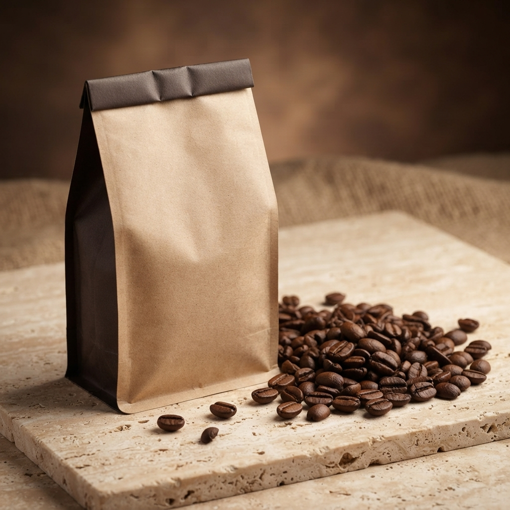
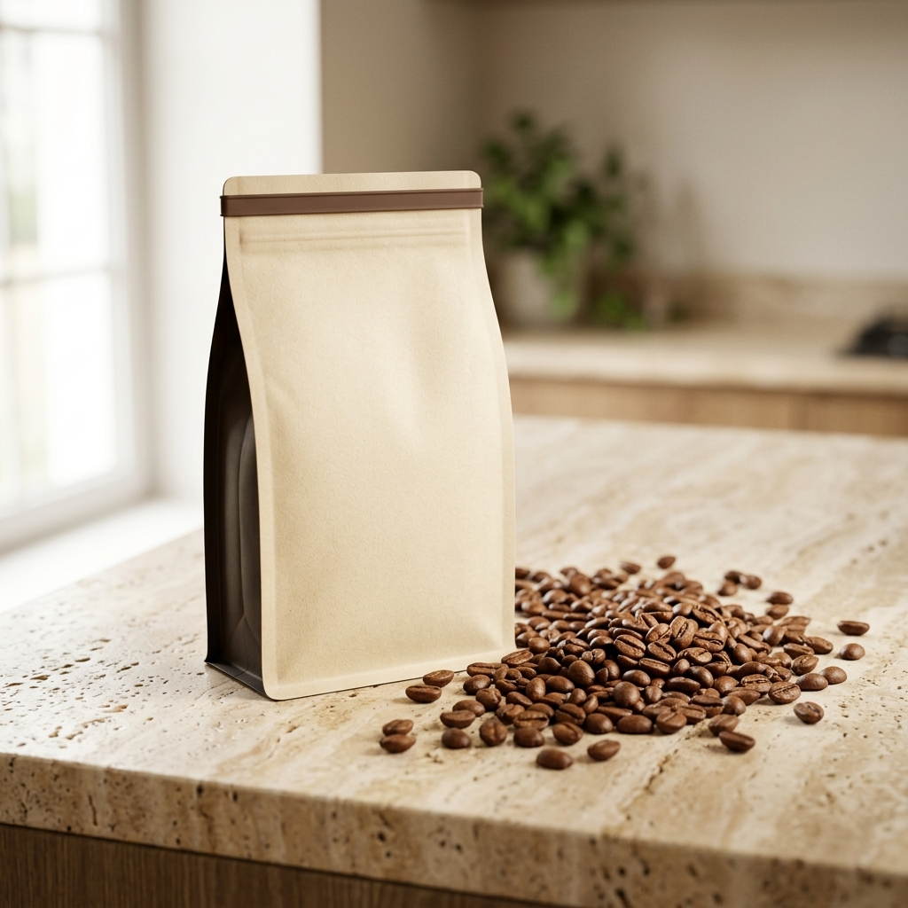
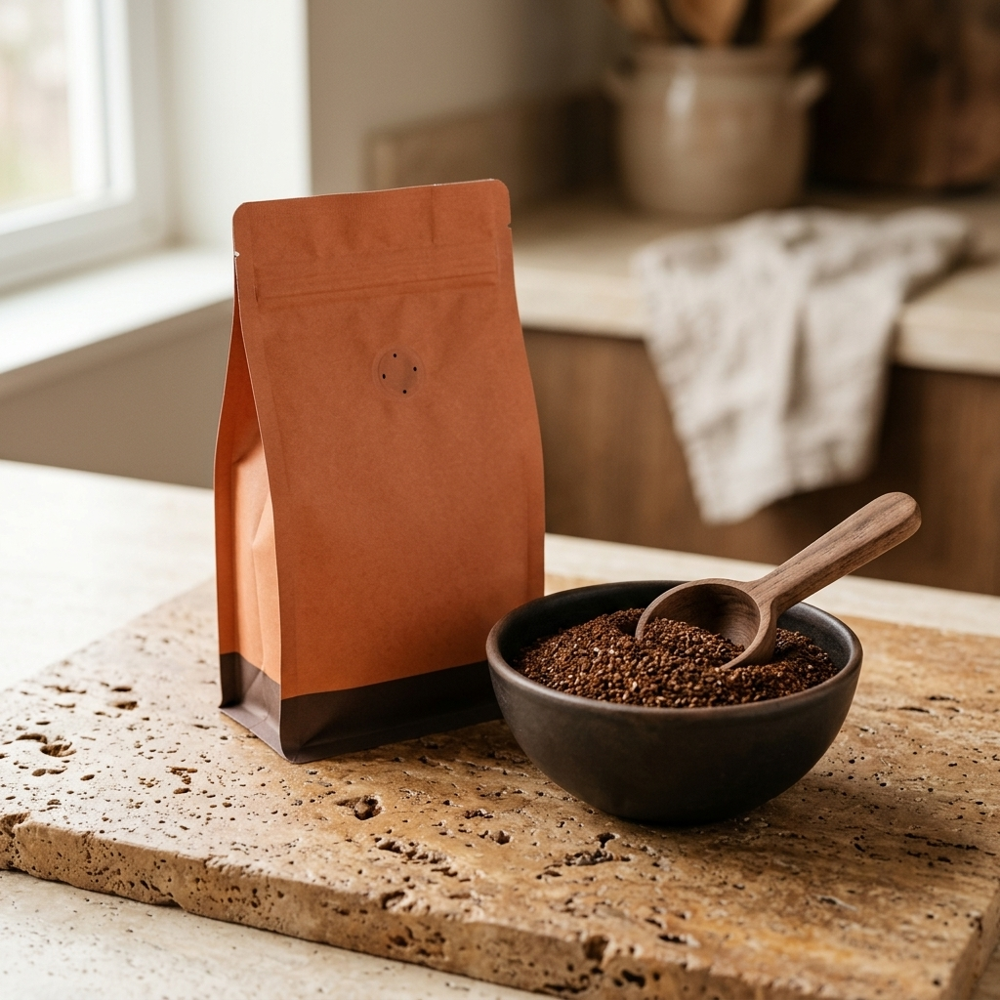
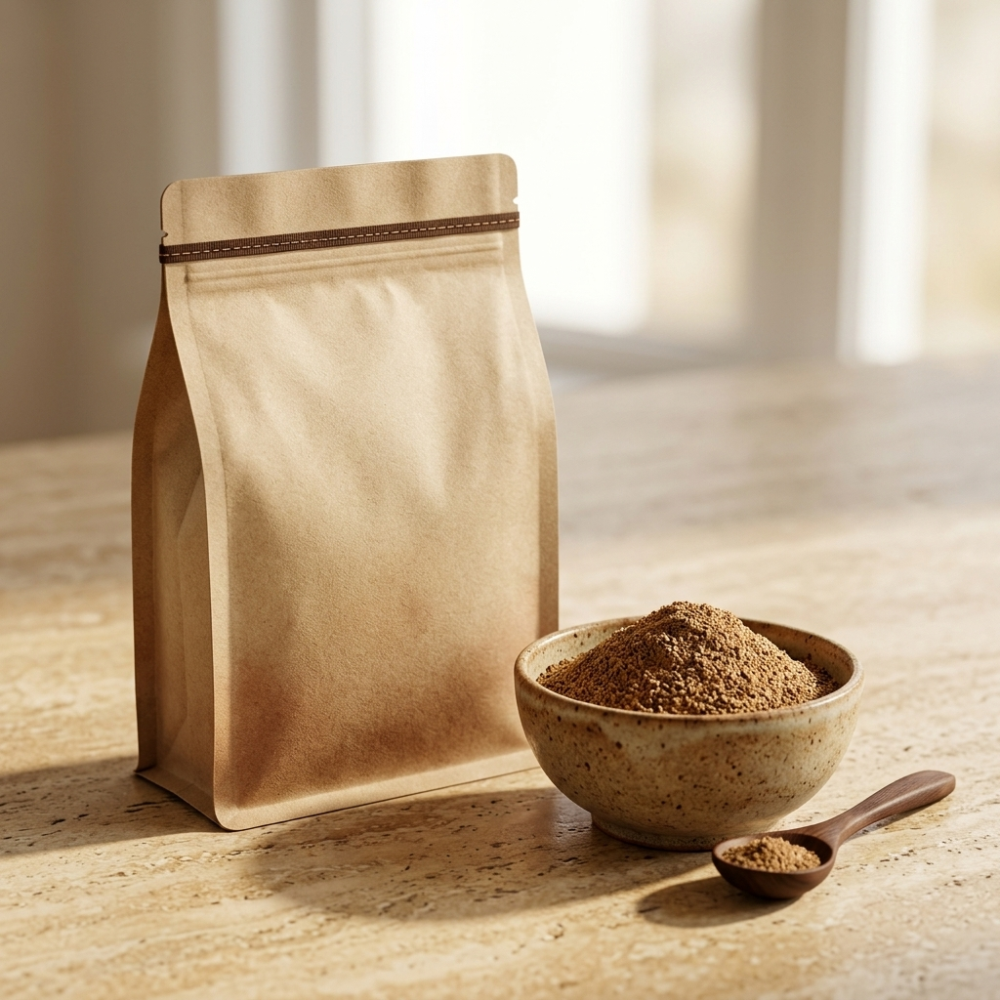
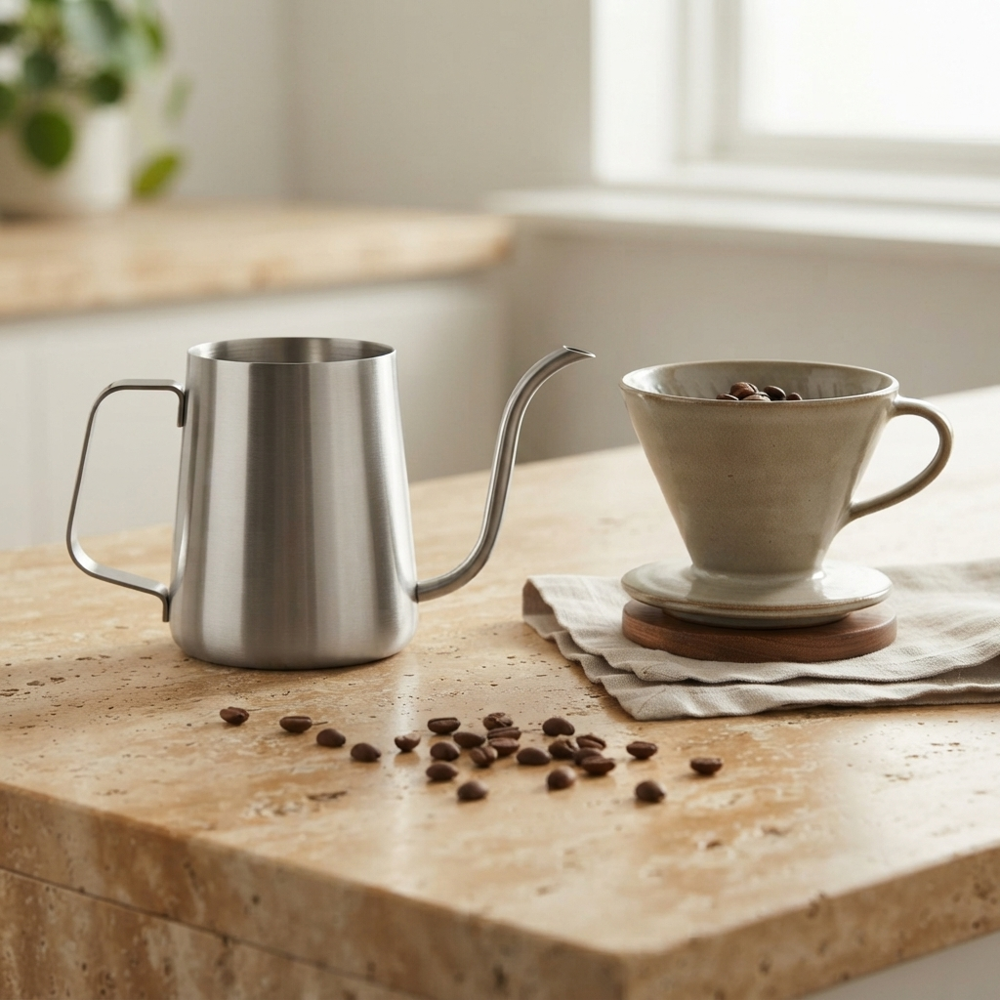
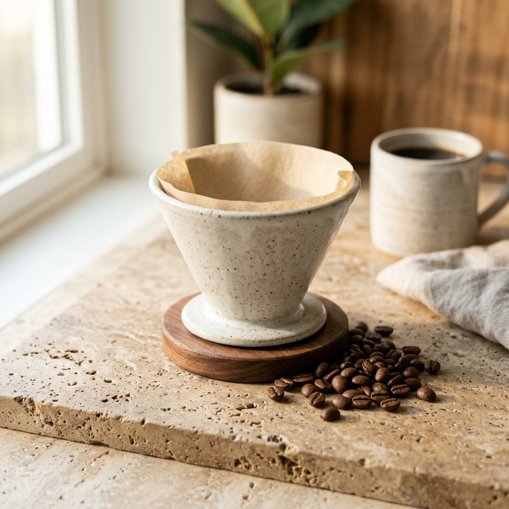

Grãos
Serrano Clássico • 250g
Torra média equilibrada com notas de chocolate ao leite, caramelo e corpo aveludado.
R$ 36,90

Torra média equilibrada com notas de chocolate ao leite, caramelo e corpo aveludado.
R$ 36,90

Microlote cultivado acima de 1.150m, com aroma floral delicado e finalização cítrica refrescante.
R$ 44,00

Moagem média calibrada para métodos filtrados, com doçura persistente e baixa acidez.
R$ 56,00

Torra média clara com notas sensoriais de rapadura, mel silvestre e frutas amarelas maduras.
R$ 38,50

Controle preciso do fluxo de água para extração uniforme em métodos coados especiais.
R$ 149,90

Estabilidade térmica superior e ranhuras internas que valorizam a clareza da bebida final.
R$ 78,00